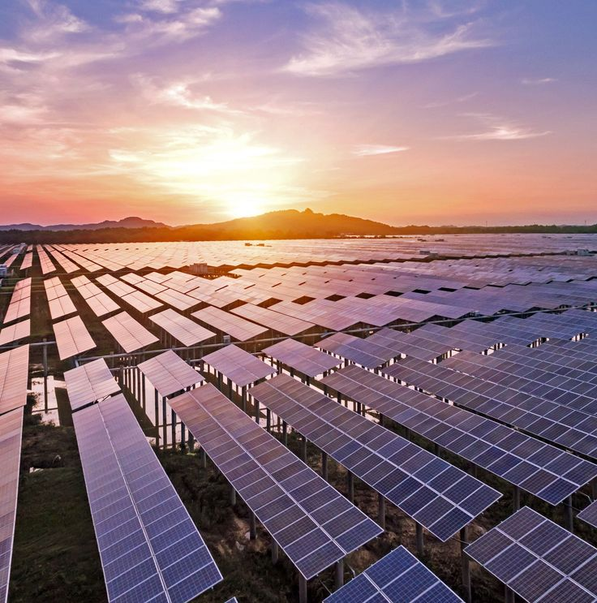

Energia Solar
- A energia solar é a conversão da radiação do sol em eletricidade ou calor, ou seja, é a energia que recebemos do Sol.
- Este meio de obtenção de energia é renovável, limpo e inesgotável. Estas características vêm colocando a energia solar como fonte alternativa em relação aos combustíveis fósseis.
- Utilizada como fonte de energia elétrica ou para o aquecimento (energia térmica), seu uso já é cada vez mais presente em nosso dia a dia, enquanto novas tecnologias as tornam mais acessíveis.
- Assim como a energia eólica, é uma das formas limpas de produção de energia que mais cresce no mundo.
Como Funciona a Energia Solar?
- A energia solar é proveniente da luz do sol e obtida por placas solares, que têm como função captar a energia luminosa e transformá-la em energia térmica ou elétrica.
- Além disso, esse tipo de energia pode ser obtida nas usinas solares compostas por inúmeros painéis que captam a energia do sol.
Tipos de Energia Solar
- A energia solar pode ser usada para produzir energia térmica, através do método de aquecimento solar.
- Ela também pode ser usada para produzir energia elétrica diretamente, através dos painéis solares fotovoltaicos ou ainda indiretamente, por meio das usinas que usam a energia heliotérmica.